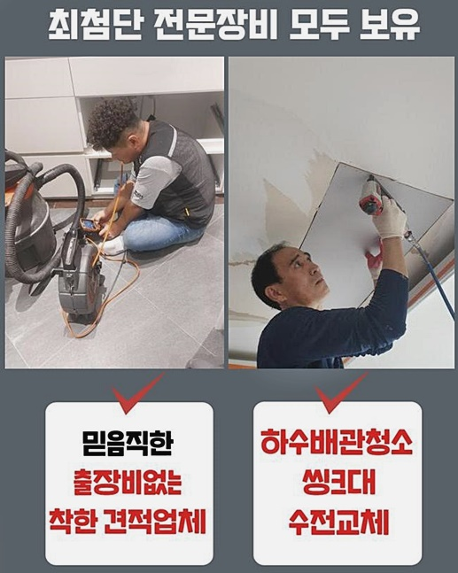
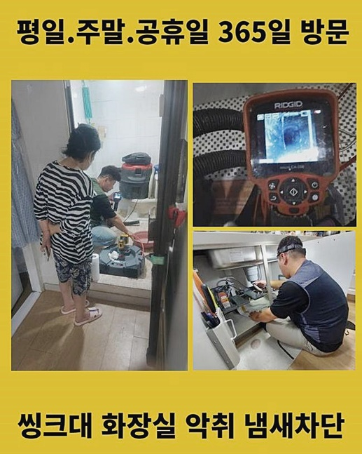
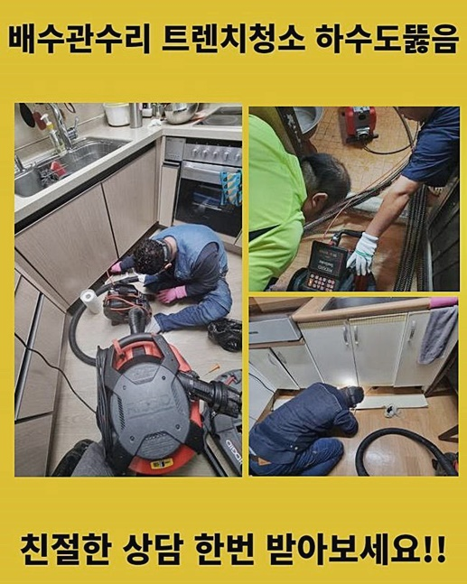
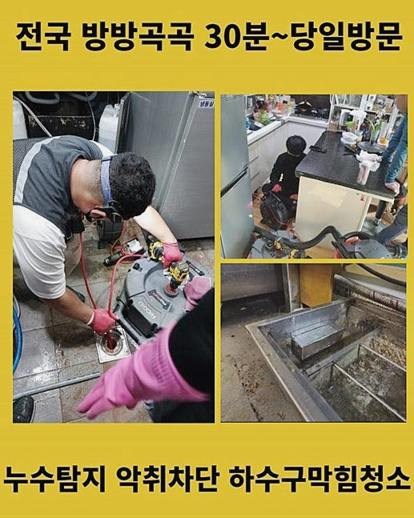
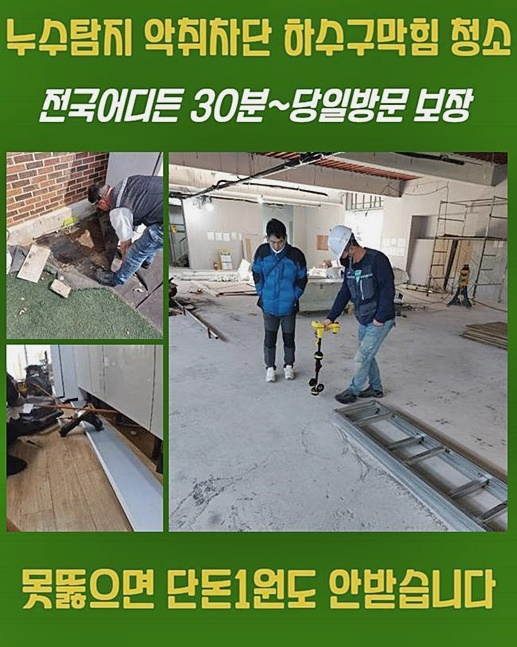
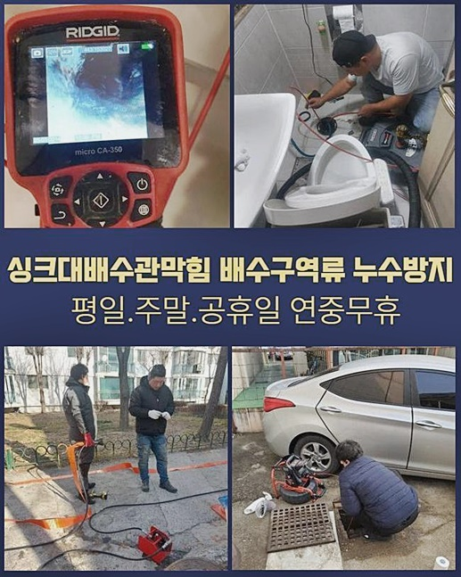
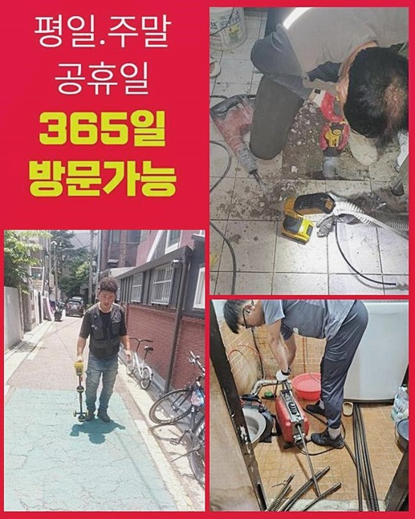

🏠 구로구 궁동싱크대막힘 개봉동 배관내시경카메라 누수탐지공사
용인시 처인구 배관막힘 전문 시공 후기

📋 작업 개요
- 위치: 용인시 처인구, 수원시 영통구, 화성시 동탄
- 서비스 유형: 배관막힘, 누수수리, 고압세척, 내시경점검
- 작업 일시:
- 업체명: 하수구수사대 (010-5615-2118)
🔍 문제 상황
구로구 궁동싱크대막힘 개봉동 배관내시경카메라 누수탐지공사
배관이 막히게되었을때 어떤대처로 취하는게좋을지 현장사례들로 알려드릴테니 자세히 살펴보시면 많은정보를 얻으실수있어요!
얼마전에 방문한사례로 주방부엌쪽에서 배수구가 막히는문제가 발현된경우가 있었죠
씽크대는종종 기름기들이 쌓이게되어 막힘이 발생하게되는데 저희들은 배관속을 꼼꼼히조사해 확실한원인을 알아내어 처리해드리고있죠
현장을살펴보니 하수관에서 악취문제가 발생하고있었고 물을쓰기도 어려웠답니다
이러한경우 메인하수구에 오염물이쌓여 배수상태가 망가진것으로 예상할수있었죠
막힘증세에있어 조속히 조치하고자 심혈을기울여서 수리를 진행해볼 예정이에요
세척작업으로 배관을 뚫어드리고 의뢰자분의 불편했던점들을 타파시켜드리도록 하겠습니다
고압세척기계는 높은압력의 물을쏘아서 이물질들을 제거해냄으로써 정확한세척이 진행될수있어요
오염물이 쌓여있는 하수도를 깔끔하게 세척시키기위해 활용되는데 앞서말씀드린 장비의경우 배수관환경에서 발생할수있는 정체문제들을 해결해보는데 효율적이에요
하수구세척을 진행하게될때 주변환경이 보존될수있도록 비닐류를써서 피해받지않도록 예방해드리고있어요
첨단기구들로 배관성능이 문제없도록 만들고 안전히 운행되기까지 기여하고있어요
배관의경우 각자다른 위치로 설치가되어 있겠지만 이어져있으므로 막힘증상이 자주발생해요

🔎 원인 분석
💡 전문가 진단: 정밀 진단 장비를 사용하여 슬러지의 고착 여부를 판명하고 타격/세척 작업을 실시했습니다.
하수구입구쪽을 살피니 샤워용품찌꺼기와 머리카락등등 이물들이 퇴적된상태임을 확인이가능했죠
이러한경우에는 배관카메라를 활용해 세심한 검수를 거쳐야해요
메인하수구의 통로는 어느정도의 확보가되어 있었지만 공간이부족해 배수상태에 영향을입히고 있었답니다
대체적으로 점검해봤더니 간단하게 이물을없애는 기계보다는 배관고압세척이 효율적일거라고 예상이가능했죠
고객분의 협조에따라 고압세척과정을 착수할수있었네요
하수구cctv를 투입하여 배관안속을 세심하게 파악할수있어요
이물질때문에 하수관이 막혔을때는 이물세척이 필요하답니다
그치만 스케일링은 잘못하여 진행하게될경우 배관안속에 손상이생기며 결국에는 심각한경우로 이어질수가있죠
다양한 작업경력을 소유하고있는 전문기사들이 현장을 방문하여 검수를 진행하기때문에 손상문제로 인한 걱정하지 않으셔도 되겠습니다
석션장비는 이물을흡입해 소거하는 장비인데요
석션기를통해 배관속에있는 잔여물질들을 빨아올려 문제증세를 파악할수있죠
플렉스샤프트는 오염물질을 분해시키고 굳은이물을 제거해내는데 사용되고있어요
이후엔 내시경검수를 거쳐서 하수구안쪽을 살핀후 적절한대처를 진행하면됩니다

🔧 작업 과정
내시경작업은 막힌원인에 대해서 알아내려면 꼭 진행해야할 사항입니다
카메라검수를 진행해보았더니 막혀버린까닭이 기름슬러지때문에 발생되었다는걸 알아낼수있었네요
내시경장비끝에 작은촬영기가 설치되어있기에 육안으로 파악하기어려운 안속지점에 투입하여 확인하고있죠
막힘문제를 보이는위치와 잔해물의 형태가어떤지 자세하게 파악이가능해요
점검과정을 통해서 작업계획을 결정함에있어 도움을준답니다
그렇기에 막히는현상이 일어나게되었다면 하수구촬영기를 투입하여 확실히 점검해보는게 중요하겠습니다
오염물을 없애기위해 최첨단기기를 준비해서 하수구에서 발현된문제를 처리하고자했죠
다시한번 알려드리지만 샤프트기계끝에 회수오거가 빙빙돌며 하수구안쪽의 석회물들을 분쇄시켜줘요
저희업체는 수립계획들을 분명하게 공개해서 고객분들께서 작업방식의 필요성들을 헤아리고 신뢰가가도록 노력하고있어요
하수구작업에 착수하게될때 전문지식이 없다면 되려배관에 손상문제를 일으킬수있기에 전문지식없이 혼자서직접 해결해보려고 하시는 행동은 삼가주셨으면 좋겠습니다
전문업체를 호출해보시면 별탈없이 베테랑들이 작업을진행해 문제를타파하면 누수우려없이 마무리될겁니다
다음장소로는 욕실배수구가 막혀버린 현장에내방했죠
이번장소도 비슷하게 오염물질들로 인해서 막혀버리게한 현장이었어요
고착물을 분쇄해주는 샤프트설비를 이용하기로 결정하고 작업에임했죠
악취까지 동반하는 상태였기에 물길확보를 통해서 뚫는작업에 착수해보기로 했답니다
조속하고 효율적인 과정이진행될것을 기대할수가 있었는데요
장시간 많은잔해물이 하수구아래쪽에 고이게되면서 막히게된것을 파악했죠
누누히 말씀드리고있지만 작업숙련도를 갖추고있지않으면 무슨원인으로 배관시스템이 무너진건지 확실히 판단할수없죠
그렇기때문에 우리와같은 전문업체의 도움을 받아보셔야해요
빠른시일안으로 문제를타파해 쾌적한환경으로 제공해드릴것을 약속할게요
재발문제로 곤란하지않게끔 예방조치또한 취해드릴게요


✅ 작업 완료
고객분의 편리함을 먼저신경쓰는 작업으로 진행할게요!
정상적인 하수구시스템을 유지해드리고자 최선을다할게요
문제를방치하면 역류나누수같은 현상으로 이어질수있으므로 문제가 나타난즉시 대처를취하세요!
전국어디든지 60분내로 도착할수있고 최첨단도구들까지 구비된상태로 대기중이니 밤낮관계없이 연락주세요
이밖으로도 궁금한게있으면 편안하게 의뢰주시면 상세하게 상담진행하도록 할게요!
하수구가 막혔다면 저희들과함께 헤쳐나가봐요!




⚠️ 하수구 배관 막힘 예방 및 관리 가이드
- ✅ 머리카락, 비닐, 물티슈 등 물에 분해되지 않는 이물질은 절대 흘려보내지 마세요.
- ✅ 기름기 많은 식기는 설거지 전 키친타올로 먼저 기름때를 닦아내세요.
- ✅ 주기적으로 배수구에 뜨거운 물을 가득 부어주어 유지방 고착을 방지하세요.
- ✅ 작업 후 1년 이내 재발 시 무상 A/S 보증 서비스를 제공합니다.
💡 핵심 정리
- 확실한 장비 작업(내시경 점검 및 샤프트 스케일링)으로 원인을 뿌리 뽑습니다.
- 작업 후 1년 이내에 동일한 부위 재발 시 100% 무상 A/S 서비스를 보장합니다.
- 서울 · 경기 · 인천 전 지역에 24시간 언제든 긴급 출동할 수 있도록 항시 대기 중입니다.
❓ 자주 묻는 질문 (FAQ)
🚨 용인시 처인구 배관막힘 문제로 고민이신가요?
정확한 원인 진단과 확실한 시공으로 재발 없는 해결을 약속드립니다.
24시간 긴급 출동 | 서울 · 경기 · 인천 전지역 | 1년 내 재발 시 무상 A/S